5. مقدمة إلى مكتبة مكونات PrimeFaces
5.1. دور PrimeFaces في تطبيق JSF
لنعد إلى بنية تطبيق JSF كما درسناها في بداية هذا المستند:
 |
تم إنشاء صفحات JSF باستخدام ثلاث مكتبات علامات:
- السطر 2: علامات <h:x> من مساحة الاسم [http://java.sun.com/jsf/html]، والتي تتوافق مع علامات HTML،
- السطر 3: علامات <f:y> في مساحة الاسم [http://java.sun.com/jsf/core] التي تتوافق مع علامات JSF،
- السطر 4: علامات <ui:z> من مساحة الاسم [http://java.sun.com/jsf/facelets]، والتي تتوافق مع علامات facelet.
لبناء صفحات JSF، سنضيف مكتبة علامات رابعة، وهي مكتبة مكونات PrimeFaces.
- السطر 3: تتوافق علامات <p:z> من مساحة الاسم [http://primefaces.org/ui] مع مكونات PrimeFaces.
هذا هو التغيير الوحيد الذي سيتم إجراؤه. ولذلك يظهر في طرق العرض. تظل معالجات الأحداث والنماذج كما كانت مع JSF. هذه نقطة مهمة يجب فهمها.
يتيح لك استخدام مكونات PrimeFaces إنشاء واجهات ويب أكثر سهولة في الاستخدام بفضل المكونات العديدة الموجودة في هذه المكتبة، وأكثر سلاسة بفضل تقنية AJAX التي تدعمها أصلاً. ويُشار إلى هذه الواجهات باسم الواجهات الغنية أو RIA (تطبيقات الإنترنت الغنية).
ستصبح بنية JSF السابقة هي بنية PF (PrimeFaces) التالية:
 |
5.2. مزايا PrimeFaces
يقدم موقع PrimeFaces [http://www.primefaces.org/showcase/ui/home.jsf] قائمة بالمكونات التي يمكن استخدامها في صفحة PF:
 |
في الأمثلة التالية، سنستخدم أول ميزتين من ميزات PrimeFaces:
- بعض المكونات المائة تقريبًا المتوفرة،
- سلوك AJAX الأصلي الخاص بها.
من بين المكونات المتاحة:
 |  |  |
لن نستخدم سوى حوالي خمسة عشر مكونًا منها في أمثلةنا، ولكن ذلك سيكون كافيًا لفهم مبادئ إنشاء صفحة PrimeFaces.
5.3. تعلم PrimeFaces
يوفر PrimeFaces أمثلة على استخدام كل مكون من مكوناته. ما عليك سوى النقر على الرابط. لنلقِ نظرة على أحد الأمثلة:
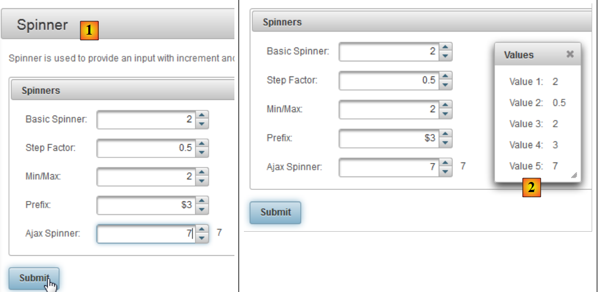 |
- في [1]، مثال لمكون [Spinner]،
- في [2]، مربع الحوار الذي يظهر بعد النقر على زر [Submit].
هناك ثلاث ميزات جديدة هنا بالنسبة لنا:
- مكون [Spinner]، الذي لا يوجد بشكل افتراضي في JSF،
- وينطبق الأمر نفسه على مربع الحوار،
- وأخيرًا، يتم التعامل مع POST الذي يتم تشغيله بواسطة زر [Submit] عبر AJAX. إذا راقبتم المتصفح عن كثب أثناء POST، فلن تروا الساعة الرملية. لا يتم إعادة تحميل الصفحة. بل يتم تعديلها ببساطة: يظهر مكون جديد — في هذه الحالة، مربع الحوار — على الصفحة.
دعونا نرى كيف يعمل كل هذا. فيما يلي كود XHTML الخاص بالمثال:
<h:form>
<p:panel header="Spinners">
<h:panelGrid id="grid" columns="2" cellpadding="5">
<h:outputLabel for="spinnerBasic" value="Basic Spinner: " />
<p:spinner id="spinnerBasic" value="#{spinnerController.number1}"/>
<h:outputLabel for="spinnerStep" value="Step Factor: " />
<p:spinner id="spinnerStep" value="#{spinnerController.number2}" stepFactor="0.25"/>
<h:outputLabel for="minmax" value="Min/Max: " />
<p:spinner id="minmax" value="#{spinnerController.number3}" min="0" max="100"/>
<h:outputLabel for="prefix" value="Prefix: " />
<p:spinner id="prefix" value="0" prefix="$" min="0" value="#{spinnerController.number4}"/>
<h:outputLabel for="ajaxspinner" value="Ajax Spinner: " />
<p:outputPanel>
<p:spinner id="ajaxspinner" value="#{spinnerController.number5}">
<p:ajax update="ajaxspinnervalue" process="@this" />
</p:spinner>
<h:outputText id="ajaxspinnervalue" value="#{spinnerController.number5}"/>
</p:outputPanel>
</h:panelGrid>
</p:panel>
<p:commandButton value="Submit" update="display" oncomplete="dialog.show()" />
<p:dialog header="Values" widgetVar="dialog" showEffect="fold" hideEffect="fold">
...
</p:dialog>
</h:form>
أولاً، لاحظ أننا نرى علامات JSF القياسية: <h:form> في السطر 1، <h:panelGrid> في السطر 3، <h:outputLabel> في السطر 4. يتم إعادة استخدام بعض علامات JSF بواسطة PF وتحسينها: <p:commandButton> في السطر 21. بعد ذلك، نجد علامات التنسيق الخاصة بـ PF: <p:panel> في السطر 2، و<p:outputPanel> في السطر 13، و<p:dialog> في السطر 23. وأخيرًا، لدينا علامات الإدخال: <p:spinner> في السطر 5.
دعونا نحلل هذا الكود فيما يتعلق بالعرض:
 |
- في [1]، المكون الذي تم إنشاؤه باستخدام علامة <p:panel> في السطر 2،
- في [2]، حقل الإدخال الذي تم إنشاؤه بدمج العلامتين <p:outputLabel> و <p:spinner> في السطرين 6 و 7،
- في [3]، زر POST الذي تم إنشاؤه باستخدام العلامة <p:commandButton> في السطر 21،
- في [4]، مربع الحوار من الأسطر 23–25،
- في [5]، حاوية غير مرئية لمكونين. تم إنشاؤها بواسطة العلامة <p:outputPanel> في السطر 13.
دعونا نحلل الكود التالي الذي ينفذ إجراء AJAX:
<h:outputLabel for="ajaxspinner" value="Ajax Spinner: " />
<p:outputPanel>
<p:spinner id="ajaxspinner" value="#{spinnerController.number5}">
<p:ajax update="ajaxspinnervalue" process="@this" />
</p:spinner>
<h:outputText id="ajaxspinnervalue" value="#{spinnerController.number5}"/>
</p:outputPanel>
يُنتج هذا الرمز العرض التالي:
 |
- السطر 1: يعرض النص [1]. كما يعمل كعلامة للمكون ذي المعرف id=ajaxspinner (لسمة for). هذا المكون هو الموجود في السطر 3 (سمة id)،
- الأسطر 3-5: تعرض المكون [2]. هذا المكون هو مكون إدخال/عرض مرتبط بالنموذج #{spinnerController.number5} (سمة القيمة)،
- السطر 6: يعرض المكون [3]. هذا المكون هو مكون عرض مرتبط بالنموذج #{spinnerController.number5} (السمة value)،
- السطر 4: تضيف علامة <p:ajax> وظيفة AJAX إلى شريط التمرير. في كل مرة يغير فيها شريط التمرير قيمته، يتم إرسال طلب POST يحتوي على تلك القيمة (السمة process="@this") إلى النموذج #{spinnerController.number5}. بمجرد الانتهاء من ذلك، يتم تحديث الصفحة (السمة update). قيمة هذه السمة هي معرف أحد المكونات على الصفحة، وفي هذه الحالة هو المكون الموجود في السطر 6. ثم يتم تحديث المكون المستهدف بواسطة السمة update باستخدام النموذج. وهذا هو مرة أخرى #{spinnerController.number5}، أي قيمة العجلة الدوارة. وبالتالي، يتبع الحقل [3] الإدخالات الموجودة في الحقل [2].
هذا هو سلوك AJAX، وهو اختصار لـ Asynchronous JavaScript and XML. بشكل عام، يعمل سلوك AJAX على النحو التالي:
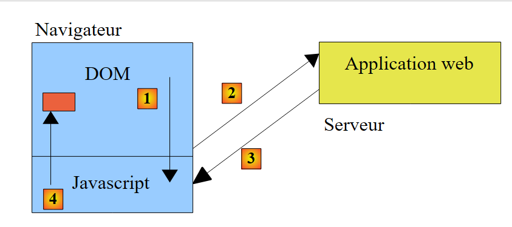 |
- يعرض المتصفح صفحة HTML تحتوي على كود JavaScript (الحرف "J" في AJAX). تشكل عناصر الصفحة كائن JavaScript يُسمى DOM (نموذج كائن المستند)،
- يستضيف الخادم تطبيق الويب الذي أنشأ هذه الصفحة،
- في [1]، يحدث حدث على الصفحة. على سبيل المثال، يتحرك مؤشر التقدم. يتم التعامل مع هذا الحدث بواسطة JavaScript،
- في [2]، يرسل JavaScript طلب POST إلى تطبيق الويب. ويقوم بذلك بشكل غير متزامن (حرف A في AJAX). يمكن للمستخدم مواصلة العمل مع الصفحة. فهي لا تتجمد، ولكن يمكن تجميدها إذا لزم الأمر. يقوم طلب POST بتحديث نموذج الصفحة بناءً على القيم المرسلة، وهنا النموذج #{spinnerController.number5}،
- في [3]، يرسل تطبيق الويب استجابة XML (حرف X في AJAX) أو JSON (ترميز كائنات JavaScript) إلى JavaScript،
- في [4]، يستخدم JavaScript هذا الرد لتحديث منطقة معينة من DOM، وهي هنا المنطقة التي تحمل المعرف id=ajaxspinnervalue.
عند استخدام JSF و PrimeFaces، يتم إنشاء JavaScript بواسطة PrimeFaces. تعتمد هذه المكتبة على مكتبة jQuery JavaScript. وبالمثل، تعتمد مكونات PrimeFaces على تلك الموجودة في مكتبة مكونات jQuery UI (واجهة المستخدم). لذلك، تشكل jQuery أساس PrimeFaces.
لنعد إلى مثالنا ونلقي نظرة الآن على طلب POST من زر [Submit]:
 |
الرمز المرتبط بـ POST هو كما يلي:
<p:commandButton value="Submit" update="display" oncomplete="dialog.show()" />
<p:dialog header="Values" widgetVar="dialog" showEffect="fold" hideEffect="fold">
<h:panelGrid id="display" columns="2" cellpadding="5">
<h:outputText value="Value 1: " />
<h:outputText value="#{spinnerController.number1}" />
<h:outputText value="Value 2: " />
<h:outputText value="#{spinnerController.number2}" />
<h:outputText value="Value 3: " />
<h:outputText value="#{spinnerController.number3}" />
<h:outputText value="Value 4: " />
<h:outputText value="#{spinnerController.number4}" />
<h:outputText value="Value 5: " />
<h:outputText value="#{spinnerController.number5}" />
</h:panelGrid>
</p:dialog>
</h:form>
- السطر 1: يتم تشغيل طلب POST بواسطة الزر الموجود في السطر 1. في PrimeFaces، تقوم العلامات التي تطلق طلب POST بذلك افتراضيًا عبر استدعاء AJAX. ولهذا السبب تحتوي هذه العلامات على سمة `update` لتحديد المنطقة المراد تحديثها بمجرد استلام استجابة الخادم. وهنا، المنطقة التي يتم تحديثها هي panelGrid في السطر 4. لذا، عند عودة استجابة POST، سيتم تحديث هذه المنطقة بالقيم التي تم إرسالها إلى النموذج. ومع ذلك، فإن هذه القيم موجودة داخل مربع حوار مخفي بشكل افتراضي. السمة oncomplete في السطر 1 هي التي تعرضه. يحدث هذا الحدث في نهاية معالجة POST. قيمة هذه السمة هي كود JavaScript. هنا، نعرض مربع الحوار الذي يحمل id=dialog، وهو المربع الموجود في السطر 3 (السمة widgetVar)،
- السطر 3: نرى سمات مختلفة لمربع الحوار. ستحتاج إلى التجربة لمعرفة وظائفها.
لقد ذكرنا النموذج ولكننا لم نعرضه بعد. ها هو:
بشكل عام، يمكنك اتباع الخطوات التالية:
- حدد مكون PrimeFaces الذي تريد استخدامه،
- ودراسة المثال الخاص به. أمثلة PrimeFaces مكتوبة بشكل جيد وسهلة الفهم.
5.4. مشروع PrimeFaces الأول: mv-pf-01
لنقم بإنشاء مشروع ويب Maven باستخدام NetBeans:
 |
- [1، 2، 3]: إنشاء مشروع Maven من النوع [تطبيق ويب]،
 |
- [4]: سيكون الخادم هو Tomcat،
- في [5]، المشروع الذي تم إنشاؤه،
- في [6]، قم بإزالة ملف [index.jsp] وحزمة Java،
 |
- في [7، 8]: في خصائص المشروع، نضيف دعمًا لـ Java Server Faces،
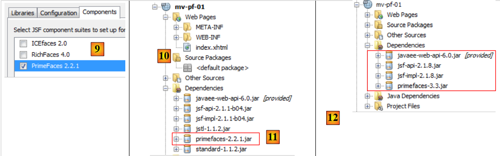 |
- في [9]، في علامة التبويب [Components]، حدد مكتبة مكونات PrimeFaces. يوفر NetBeans دعمًا لمكتبات مكونات أخرى: ICEFaces و RichFaces.
- في [10]، المشروع الذي تم إنشاؤه. في [11]، لاحظ التبعية لـ PrimeFaces.
باختصار، مشروع PrimeFaces هو مشروع JSF قياسي تمت إضافة تبعية لـ PrimeFaces إليه. لا أكثر.
الآن بعد أن فهمنا ذلك، نقوم بتعديل ملف [pom.xml] ليعمل مع أحدث إصدارات المكتبات:
<dependency>
<groupId>com.sun.faces</groupId>
<artifactId>jsf-impl</artifactId>
<version>2.1.8</version>
<scope>compile</scope>
</dependency>
<dependency>
<groupId>org.primefaces</groupId>
<artifactId>primefaces</artifactId>
<version>3.3</version>
<scope>compile</scope>
</dependency>
<dependency>
<groupId>javax</groupId>
<artifactId>javaee-web-api</artifactId>
<version>6.0</version>
<scope>provided</scope>
</dependency>
</dependencies>
<repositories>
<repository>
<id>jsf20</id>
<name>Repository for library Library[jsf20]</name>
<url>http://download.java.net/maven/2/</url>
</repository>
<repository>
<id>primefaces</id>
<name>Repository for library Library[primefaces]</name>
<url>http://repository.primefaces.org/</url>
</repository>
</repositories>
الأسطر 26–30: لاحظ مستودع Maven الخاص بـ PrimeFaces. بمجرد إجراء هذه التغييرات، قم بإنشاء المشروع لبدء تنزيل التبعيات. ستحصل بعد ذلك على المشروع [12].
الآن، دعونا نحاول إعادة إنتاج المثال الذي درسناه. تصبح صفحة [index.html] كما يلي:
<?xml version='1.0' encoding='UTF-8' ?>
<!DOCTYPE html PUBLIC "-//W3C//DTD XHTML 1.0 Transitional//EN" "http://www.w3.org/TR/xhtml1/DTD/xhtml1-transitional.dtd">
<html xmlns="http://www.w3.org/1999/xhtml"
xmlns:h="http://java.sun.com/jsf/html"
xmlns:p="http://primefaces.org/ui"
xmlns:f="http://java.sun.com/jsf/core"
xmlns:ui="http://java.sun.com/jsf/facelets">
<h:head>
<title>Spinner</title>
</h:head>
<h:body>
<!-- form -->
<h:form>
<p:panel header="Spinners">
<h:panelGrid id="grid" columns="2" cellpadding="5">
<h:outputLabel for="spinnerBasic" value="Basic Spinner: " />
<p:spinner id="spinnerBasic" value="#{spinnerController.number1}"/>
<h:outputLabel for="spinnerStep" value="Step Factor: " />
<p:spinner id="spinnerStep" value="#{spinnerController.number2}" stepFactor="0.25"/>
<h:outputLabel for="minmax" value="Min/Max: " />
<p:spinner id="minmax" value="#{spinnerController.number3}" min="0" max="100"/>
<h:outputLabel for="prefix" value="Prefix: " />
<p:spinner id="prefix" prefix="$" min="0" value="#{spinnerController.number4}"/>
<h:outputLabel for="ajaxspinner" value="Ajax Spinner: " />
<p:outputPanel>
<p:spinner id="ajaxspinner" value="#{spinnerController.number5}">
<p:ajax update="ajaxspinnervalue" process="@this" />
</p:spinner>
<h:outputText id="ajaxspinnervalue" value="#{spinnerController.number5}"/>
</p:outputPanel>
</h:panelGrid>
</p:panel>
<p:commandButton value="Submit" update="display" oncomplete="dialog.show()" />
<!-- dialog box -->
<p:dialog header="Values" widgetVar="dialog" showEffect="fold" hideEffect="fold">
<h:panelGrid id="display" columns="2" cellpadding="5">
<h:outputText value="Value 1: " />
<h:outputText value="#{spinnerController.number1}" />
<h:outputText value="Value 2: " />
<h:outputText value="#{spinnerController.number2}" />
<h:outputText value="Value 3: " />
<h:outputText value="#{spinnerController.number3}" />
<h:outputText value="Value 4: " />
<h:outputText value="#{spinnerController.number4}" />
<h:outputText value="Value 5: " />
<h:outputText value="#{spinnerController.number5}" />
</h:panelGrid>
</p:dialog>
</h:form>
</h:body>
</html>
لا تنسَ السطر 5، الذي يعلن مساحة الاسم لمكتبة علامات PrimeFaces. أضف الحبة التي تعمل كقالب للصفحة إلى المشروع:
 |
البيان هو كما يلي:
package beans;
import javax.faces.bean.RequestScoped;
import javax.faces.bean.ManagedBean;
@ManagedBean
@RequestScoped
public class SpinnerController {
// model
private int number1;
private double number2;
private int number3;
private int number4;
private int number5;
// getters and setters
...
}
الفئة عبارة عن مكون (السطر 6) بنطاق الطلب (السطر 7). ونظرًا لعدم تحديد اسم، يأخذ المكون اسم الفئة مع كتابة الحرف الأول بحرف صغير: spinnerController.
عند تشغيل المشروع، نحصل على ما يلي:
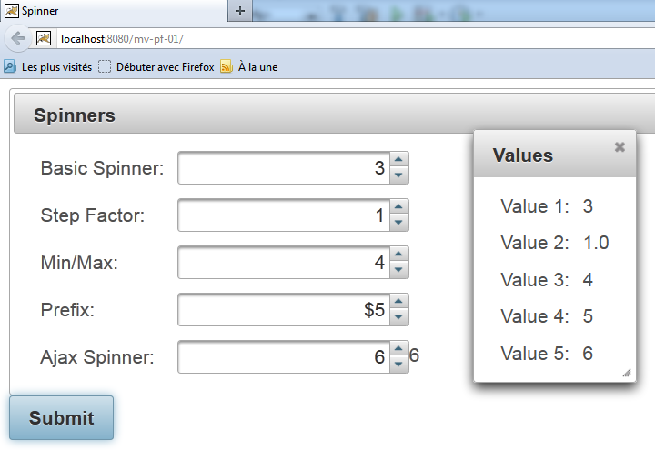 |
لقد أوضحنا للتو كيفية اختبار مثال مأخوذ من موقع PrimeFaces. ويمكن اختبار جميع الأمثلة بهذه الطريقة.
ومن الآن فصاعدًا، سنركز فقط على مكونات PrimeFaces معينة. سنعيد أولاً النظر في الأمثلة التي درسناها باستخدام JSF ونستبدل بعض علامات JSF بعلامات PrimeFaces. سيتغير مظهر الصفحات قليلاً؛ وستتمتع بسلوك AJAX، لكن لن تكون هناك حاجة لتغيير الفاصوليا المرتبطة بها. في كل من الأمثلة القادمة، سنقدم ببساطة كود XHTML للصفحات ولقطات الشاشة المرتبطة بها. نشجع القراء على اختبار الأمثلة لتحديد الاختلافات بين صفحات JSF وصفحات PF.
5.5. المثال mv-pf-02: معالج الأحداث – التدويل – التنقل بين الصفحات
هذا المشروع هو نسخة معدلة من مشروع JSF [mv-jsf2-02] (القسم 2.4، الصفحة 41):
 |  |
مشروع NetBeans هو كما يلي:
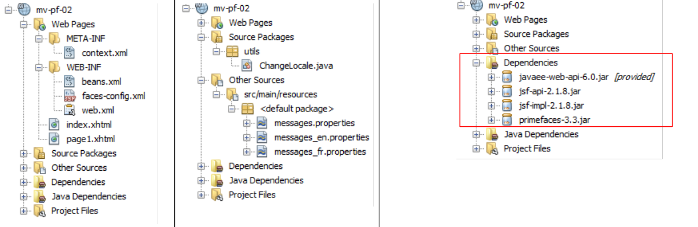 |
صفحة [index.html] هي كما يلي:
<?xml version='1.0' encoding='UTF-8' ?>
<!DOCTYPE html PUBLIC "-//W3C//DTD XHTML 1.0 Transitional//EN" "http://www.w3.org/TR/xhtml1/DTD/xhtml1-transitional.dtd">
<html xmlns="http://www.w3.org/1999/xhtml"
xmlns:h="http://java.sun.com/jsf/html"
xmlns:p="http://primefaces.org/ui"
xmlns:f="http://java.sun.com/jsf/core"
xmlns:ui="http://java.sun.com/jsf/facelets">
<f:view locale="#{changeLocale.locale}">
<h:head>
<title><h:outputText value="#{msg['welcome.titre']}" /></title>
</h:head>
<body>
<h:form id="formulaire">
<h:panelGrid columns="2">
<p:commandLink value="#{msg['welcome.langue1']}" action="#{changeLocale.setFrenchLocale}" ajax="false"/>
<p:commandLink value="#{msg['welcome.langue2']}" action="#{changeLocale.setEnglishLocale}" ajax="false"/>
</h:panelGrid>
<h1><h:outputText value="#{msg['welcome.titre']}" /></h1>
<p:commandLink value="#{msg['welcome.page1']}" action="page1" ajax="false"/>
</h:form>
</body>
</f:view>
</html>
في الأسطر 15 و16 و19، تم استبدال علامات <h:commandLink> بعلامات <p:commandLink>. تعمل هذه العلامة بشكل افتراضي باستخدام AJAX، ويمكن تعطيلها عن طريق تعيين السمة ajax="false". لذا، هنا، تعمل علامات <p:commandLink> مثل علامات <h:commandLink>: ستُعاد تحميل الصفحة عند النقر على هذه الروابط.
5.6. مثال mv-pf-03: تخطيط الصفحة باستخدام Facelets
يوضح هذا المشروع إنشاء صفحات XHTML باستخدام قوالب Facelets من المثال [mv-jsf2-09] (القسم 2.11):
 |
مشروع NetBeans هو كما يلي:
 |
- في [1]، ملفات تكوين مشروع JSF،
- في [2]، صفحات XHTML،
- في [3]، حبة الدعم لتبديل اللغة،
- في [4]، ملفات الرسائل،
- في [5]، التبعيات.
تستند صفحات المشروع إلى صفحة [layout.xhtml]:
<?xml version='1.0' encoding='UTF-8' ?>
<!DOCTYPE html PUBLIC "-//W3C//DTD XHTML 1.0 Transitional//EN" "http://www.w3.org/TR/xhtml1/DTD/xhtml1-transitional.dtd">
<html xmlns="http://www.w3.org/1999/xhtml"
xmlns:h="http://java.sun.com/jsf/html"
xmlns:p="http://primefaces.org/ui"
xmlns:f="http://java.sun.com/jsf/core"
xmlns:ui="http://java.sun.com/jsf/facelets">
<f:view locale="#{changeLocale.locale}">
<h:head>
<title>JSF</title>
<h:outputStylesheet library="css" name="styles.css"/>
</h:head>
<h:body style="background-image: url('${request.contextPath}/resources/images/standard.jpg');">
<h:form id="formulaire">
<table style="width: 600px">
<tr>
<td colspan="2" bgcolor="#ccccff">
<ui:include src="entete.xhtml"/>
</td>
</tr>
<tr>
<td style="width: 100px; height: 200px" bgcolor="#ffcccc">
<ui:include src="menu.xhtml"/>
</td>
<td>
<p:outputPanel id="contenu">
<ui:insert name="contenu" >
<h2>Contenu</h2>
</ui:insert>
</p:outputPanel>
</td>
</tr>
<tr bgcolor="#ffcc66">
<td colspan="2">
<ui:include src="basdepage.xhtml"/>
</td>
</tr>
</table>
</h:form>
</h:body>
</f:view>
</html>
- السطر 9: تغلف علامة <f:view> الصفحة بأكملها للاستفادة من الترجمة التي توفرها،
- السطر 15: نموذج مع معرف النموذج. يشكل هذا النموذج نص الصفحة. داخل هذا النص، يوجد قسم ديناميكي واحد فقط، الأسطر 28–30. هذا هو المكان الذي سيتم فيه إدراج الجزء المتغير من الصفحة:
 |
- سيتم تحديث المنطقة المحددة أعلاه عبر استدعاءات AJAX. لتحديدها، قمنا بتضمينها في حاوية PrimeFaces تم إنشاؤها بواسطة العلامة <p:outputPanel> (السطر 27). وقد تم تسمية هذه الحاوية بـ `content` (سمة id). نظرًا لوجودها داخل نموذج، وهو في حد ذاته حاوية باسم `form`، فإن الاسم الكامل للمنطقة الديناميكية هو `form:content`. تشير العلامة الأولى : إلى أننا نبدأ من جذر المستند، ثم ننتقل إلى الحاوية المسماة "form"، ثم إلى الحاوية المسماة "content". أحد التحديات في استخدام AJAX هو تسمية المناطق التي سيتم تحديثها بواسطة استدعاء AJAX بشكل صحيح. أبسط طريقة هي النظر إلى شفرة المصدر لصفحة HTML المستلمة:
فيما سبق، نرى أن العلامة <h:outputPanel> قد أنشأت علامة HTML <span>. في هذا المثال، يشير الاسم النسبي form:content (بدون النقطتين في البداية) والاسم الكامل :form:content (مع النقطتين في البداية) إلى نفس الكائن.
لاحظ أن استدعاءات AJAX (<p:commandButton>، <p:commandLink>) التي تقوم بتحديث المنطقة الديناميكية ستحتوي على السمة update=":form:content".
الصفحة [index.xhtml] هي الصفحة الوحيدة التي يعرضها المشروع:
<?xml version='1.0' encoding='UTF-8' ?>
<!DOCTYPE html PUBLIC "-//W3C//DTD XHTML 1.0 Transitional//EN" "http://www.w3.org/TR/xhtml1/DTD/xhtml1-transitional.dtd">
<html xmlns="http://www.w3.org/1999/xhtml"
xmlns:h="http://java.sun.com/jsf/html"
xmlns:p="http://primefaces.org/ui"
xmlns:f="http://java.sun.com/jsf/core"
xmlns:ui="http://java.sun.com/jsf/facelets">
<ui:composition template="layout.xhtml">
<ui:define name="contenu">
<ui:fragment rendered="#{requestScope.page1 || requestScope.page2==null}">
<ui:include src="page1.xhtml"/>
</ui:fragment>
<ui:fragment rendered="#{requestScope.page2}">
<ui:include src="page2.xhtml"/>
</ui:fragment>
</ui:define>
</ui:composition>
</html>
- السطر 8: القالب الخاص بـ [index.xhtml] هو الصفحة [layout.xhtml] التي ناقشناها للتو.
- السطر 9، هذه هي منطقة معرف المحتوى التي يتم تحديثها بواسطة [index.html]. في هذه المنطقة، يوجد جزءان:
- جزء [page1.xhtml] في السطر 11؛
- جزء [page2.xhtml] في السطر 14.
هذان الجزءان متنافيان.
- السطر 10: يتم عرض جزء [page1.xhtml] إذا كان الطلب يحتوي على السمة page1 مضبوطة على true أو إذا كانت السمة page2 غير موجودة. وهذا هو الحال بالنسبة للطلب الأول، حيث لن تكون أي من هاتين السمتين موجودة في الطلب. في هذه الحالة، سيتم عرض جزء [page1.xhtml]،
- السطر 11: يتم عرض الجزء [page2.xhtml] إذا كان الطلب يحتوي على السمة page2 مضبوطة على true
الجزء [page1.xhtml] هو كما يلي:
<?xml version='1.0' encoding='UTF-8' ?>
<!DOCTYPE html PUBLIC "-//W3C//DTD XHTML 1.0 Transitional//EN" "http://www.w3.org/TR/xhtml1/DTD/xhtml1-transitional.dtd">
<html xmlns="http://www.w3.org/1999/xhtml"
xmlns:h="http://java.sun.com/jsf/html"
xmlns:p="http://primefaces.org/ui"
xmlns:f="http://java.sun.com/jsf/core"
xmlns:ui="http://java.sun.com/jsf/facelets">
<body>
<h:panelGrid columns="2">
<p:commandLink value="#{msg['page1.langue1']}" actionListener="#{changeLocale.setFrenchLocale}" ajax="true" update=":formulaire:contenu"/>
<p:commandLink value="#{msg['page1.langue2']}" actionListener="#{changeLocale.setEnglishLocale}" ajax="true" update=":formulaire:contenu"/>
</h:panelGrid>
<h1><h:outputText value="#{msg['page1.titre']}" /></h1>
<p:commandLink value="#{msg['page1.lien']}" update=":formulaire:contenu">
<f:setPropertyActionListener value="#{true}" target="#{requestScope.page2}" />
</p:commandLink>
</body>
</html>
ويعرض المحتوى التالي:
 |
- السطران 11 و 12: الرابطان لتغيير اللغة. يقوم هذان الرابطان بتشغيل استدعاءات AJAX (ajax=true). هذه هي القيمة الافتراضية. لذلك، لا تحتاج إلى تضمين السمة ajax=true. ولن نقوم بذلك في المستقبل. لاحظ أن هذين الرابطين يقومان بتحديث منطقة :form:content (السمة update)، وهي المنطقة المظللة أعلاه،
- السطر 15: رابط تنقل AJAX يقوم مرة أخرى بتحديث منطقة :form:content،
- السطر 16: نستخدم العلامة <h:setPropertyActionListener> لتعيين قيمة السمة page2 في الطلب على "true". سيؤدي ذلك إلى عرض الجزء [page2.xhtml] (السطر 6 أدناه) في صفحة [index.xhtml]:
<ui:composition template="layout.xhtml">
<ui:define name="contenu">
<ui:fragment rendered="#{requestScope.page1 || requestScope.page2==null}">
<ui:include src="page1.xhtml"/>
</ui:fragment>
<ui:fragment rendered="#{requestScope.page2}">
<ui:include src="page2.xhtml"/>
</ui:fragment>
</ui:define>
</ui:composition>
الجزء [page2.xhtml] مشابه:
 |
فيما يلي كود [page2.xhtml]:
<?xml version='1.0' encoding='UTF-8' ?>
<!DOCTYPE html PUBLIC "-//W3C//DTD XHTML 1.0 Transitional//EN" "http://www.w3.org/TR/xhtml1/DTD/xhtml1-transitional.dtd">
<html xmlns="http://www.w3.org/1999/xhtml"
xmlns:h="http://java.sun.com/jsf/html"
xmlns:p="http://primefaces.org/ui"
xmlns:f="http://java.sun.com/jsf/core"
xmlns:ui="http://java.sun.com/jsf/facelets">
<body>
<h1><h:outputText value="#{msg['page2.entete']}"/></h1>
<p:commandLink value="#{msg['page2.lien']}" update=":formulaire:contenu">
<f:setPropertyActionListener value="#{true}" target="#{requestScope.page1}" />
</p:commandLink>
</body>
</html>
من هذا المثال، سنضع النقاط التالية في الاعتبار لاحقًا:
- سنستخدم القالب [layout.xhtml] كقالب للصفحة،
- وسيتم تحديد المنطقة الديناميكية بواسطة المعرف id:form:content وسيتم تحديثها عبر استدعاءات AJAX.
5.7. مثال mv-pf-04: نموذج الإدخال
هذا المشروع هو نسخة معدلة من مشروع JSF2 [mv-jsf2-03] (انظر القسم 2.5):
 |
مشروع NetBeans هو كما يلي:
 |
أعلاه، في [1]، توجد صفحات XHTML الخاصة بالمشروع. يتم توفير التخطيط بواسطة القالب [layout.xhtml] الذي تمت مناقشته سابقًا. صفحة [index.xhtml] هي الصفحة الوحيدة للمشروع. يتم عرضها في منطقة :form:content. وفيما يلي شفرتها:
<?xml version='1.0' encoding='UTF-8' ?>
<!DOCTYPE html PUBLIC "-//W3C//DTD XHTML 1.0 Transitional//EN" "http://www.w3.org/TR/xhtml1/DTD/xhtml1-transitional.dtd">
<html xmlns="http://www.w3.org/1999/xhtml"
xmlns:h="http://java.sun.com/jsf/html"
xmlns:p="http://primefaces.org/ui"
xmlns:f="http://java.sun.com/jsf/core"
xmlns:ui="http://java.sun.com/jsf/facelets">
<ui:composition template="layout.xhtml">
<ui:define name="contenu">
<ui:include src="page1.xhtml"/>
</ui:define>
</ui:composition>
</html>
يعرض ببساطة الجزء [page1.xhtml]. وهذا يعادل النموذج الذي تمت مناقشته في المثال [mv-jsf2-03]. تذكر أن الغرض من ذلك المثال كان تقديم علامات الإدخال JSF. وقد تم استبدال هذه العلامات هنا بعلامات PrimeFaces.
PanelGrid
لتنسيق العناصر في [page1.xhtml]، نستخدم علامة <p:panelGrid>. على سبيل المثال، بالنسبة لرابطي اللغتين:
<!-- languages -->
<p:panelGrid columns="2">
<p:commandLink value="#{msg['form.langue1']}" actionListener="#{changeLocale.setFrenchLocale}" update=":formulaire:contenu"/>
<p:commandLink value="#{msg['form.langue2']}" actionListener="#{changeLocale.setEnglishLocale}" update=":formulaire:contenu"/>
</p:panelGrid>
ينتج عن ذلك الناتج التالي:
هناك شكل آخر لعلامة <p:panelGrid> وهو كما يلي:
<p:panelGrid>
<f:facet name="header">
<p:row>
<p:column colspan="3"><h:outputText value="#{msg['form.titre']}"/></p:column>
</p:row>
<p:row>
<p:column><h:outputText value="#{msg['form.headerCol1']}"/></p:column>
<p:column><h:outputText value="#{msg['form.headerCol2']}"/></p:column>
<p:column><h:outputText value="#{msg['form.headerCol3']}"/></p:column>
</p:row>
</f:facet>
<p:row>
<p:column>
<h:outputText value="inputText"/>
</p:column>
<p:column>
<h:outputLabel for="inputText" value="#{msg['form.loginPrompt']}" />
<p:inputText id="inputText" value="#{form.inputText}"/>
</p:column>
<p:column>
<h:outputText id="inputTextValue" value="#{form.inputText}"/>
</p:column>
</p:row>
...
<f:facet name="footer">
<p:row>
<p:column colspan="3">
<div align="center">
<p:commandButton value="#{msg['form.submitText']}" update=":formulaire:contenu"/>
</div>
</p:column>
</p:row>
</f:facet>
</p:panelGrid>
يتم تحديد صفوف وأعمدة الجدول بواسطة العلامتين <p:row> و <p:column>.
تحدد الأسطر 3–12 رأس الجدول:
الأسطر 14–25 تحدد صفًا من الجدول:
الأسطر 27–35 تحدد تذييل الجدول:
inputText
<p:row>
<p:column>
<h:outputText value="inputText"/>
</p:column>
<p:column>
<h:outputLabel for="inputText" value="#{msg['form.loginPrompt']}" />
<p:inputText id="inputText" value="#{form.inputText}"/>
</p:column>
<p:column>
<h:outputText id="inputTextValue" value="#{form.inputText}"/>
</p:column>
</p:row>
كلمة المرور
<p:row>
<p:column>
<h:outputText value="inputSecret"/>
</p:column>
<p:column>
<h:outputLabel for="inputSecret" value="#{msg['form.passwdPrompt']}"/>
<p:password id="inputSecret" value="#{form.inputSecret}" feedback="true"
promptLabel="#{msg['form.promptLabel']}" weakLabel="#{msg['form.weakLabel']}"
goodLabel="#{msg['form.goodLabel']}" strongLabel="#{msg['form.strongLabel']}" />
</p:column>
<p:column>
<h:outputText id="inputSecretValue" value="#{form.inputSecret}"/>
</p:column>
</p:row>
 |
السطر 7: توفر السمة feedback=true تقييمًا لقوة [1] كلمة المرور.
inputTextArea
<p:row>
<p:column>
<h:outputText value="inputTextArea"/>
</p:column>
<p:column>
<h:outputLabel for="inputTextArea" value="#{msg['form.descPrompt']}"/>
<p:editor id="inputTextArea" value="#{form.inputTextArea}" rows="4"/>
</p:column>
<p:column>
<h:outputText id="inputTextAreaValue" value="#{form.inputTextArea}"/>
</p:column>
</p:row>
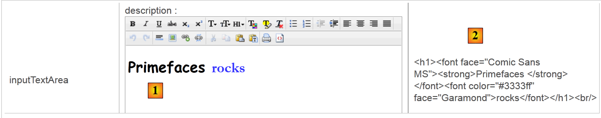 |
السطر 7: تعرض علامة <p:editor> محرر نص منسق يتيح لك تنسيق النص (الخط، الحجم، اللون، المحاذاة، إلخ). ما يتم إرساله إلى الخادم هو كود HTML للنص الذي تم إدخاله [2].
selectOneListBox
<p:row>
<p:column>
<h:outputText value="selectOneListBox"/>
</p:column>
<p:column>
<h:outputLabel for="selectOneListBox1" value="#{msg['form.selectOneListBox1Prompt']}"/>
<p:selectOneListbox id="selectOneListBox1" value="#{form.selectOneListBox1}">
<f:selectItem itemValue="1" itemLabel="un"/>
<f:selectItem itemValue="2" itemLabel="deux"/>
<f:selectItem itemValue="3" itemLabel="trois"/>
</p:selectOneListbox>
</p:column>
<p:column>
<h:outputText id="selectOneListBox1Value" value="#{form.selectOneListBox1}"/>
</p:column>
</p:row>
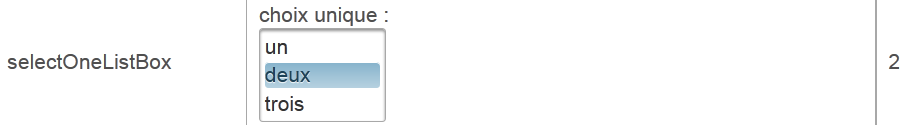 |
selectOneMenu
<p:row>
<p:column>
<h:outputText value="selectOneMenu"/>
</p:column>
<p:column>
<h:outputLabel for="selectOneMenu" value="#{msg['form.selectOneMenuPrompt']}"/>
<p:selectOneMenu id="selectOneMenu" value="#{form.selectOneMenu}">
<f:selectItem itemValue="1" itemLabel="un"/>
<f:selectItem itemValue="2" itemLabel="deux"/>
<f:selectItem itemValue="3" itemLabel="trois"/>
<f:selectItem itemValue="4" itemLabel="quatre"/>
<f:selectItem itemValue="5" itemLabel="cinq"/>
</p:selectOneMenu>
</p:column>
<p:column>
<h:outputText id="selectOneMenuValue" value="#{form.selectOneMenu}"/>
</p:column>
</p:row>
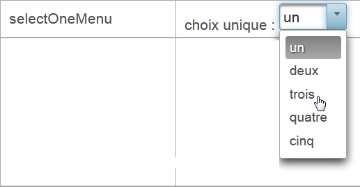 |
قائمة التحديد المتعدد
<p:row>
<p:column>
<h:outputText value="selectManyMenu"/>
</p:column>
<p:column>
<h:outputLabel for="selectManyMenu" value="#{msg['form.selectManyMenuPrompt']}"/>
<p:selectManyMenu id="selectManyMenu" value="#{form.selectManyMenu}" >
<f:selectItem itemValue="1" itemLabel="un"/>
<f:selectItem itemValue="2" itemLabel="deux"/>
<f:selectItem itemValue="3" itemLabel="trois"/>
<f:selectItem itemValue="4" itemLabel="quatre"/>
<f:selectItem itemValue="5" itemLabel="cinq"/>
</p:selectManyMenu>
<p:commandLink value="#{msg['form.buttonRazText']}" actionListener="#{form.clearSelectManyMenu()}" update=":formulaire:selectManyMenu" style="margin-left: 10px"/>
</p:column>
<p:column>
<h:outputText id="selectManyMenuValue" value="#{form.selectManyMenuValue}"/>
</p:column>
</p:row>
 |
السطر 14: لاحظ أن رابط [Reset] يقوم بتحديث AJAX لحقل :form:selectManyMenu، والذي يتوافق مع المكون الموجود في السطر 6. ومع ذلك، من المهم ملاحظة أنه أثناء عملية إرسال AJAX POST، يتم إرسال جميع قيم النموذج. وبالتالي، يتم تحديث النموذج بالكامل. ولكن مع هذا النموذج، يتم تحديث حقل :form:selectManyMenu فقط.
selectBooleanCheckbox
<p:row>
<p:column>
<h:outputText value="selectBooleanCheckbox"/>
</p:column>
<p:column>
<h:outputLabel for="selectBooleanCheckbox" value="#{msg['form.selectBooleanCheckboxPrompt']}"/>
<p:selectBooleanCheckbox id="selectBooleanCheckbox" value="#{form.selectBooleanCheckbox}"/>
</p:column>
<p:column>
<h:outputText id="selectBooleanCheckboxValue" value="#{form.selectBooleanCheckbox}"/>
</p:column>
</p:row>
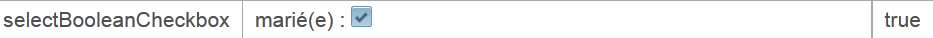 |
تحديد عدة خانات اختيار
<p:row>
<p:column>
<h:outputText value="selectManyCheckbox"/>
</p:column>
<p:column>
<h:outputLabel for="selectManyCheckbox" value="#{msg['form.selectManyCheckboxPrompt']}"/>
<p:selectManyCheckbox id="selectManyCheckbox" value="#{form.selectManyCheckbox}">
<f:selectItem itemValue="1" itemLabel="rouge"/>
<f:selectItem itemValue="2" itemLabel="bleu"/>
<f:selectItem itemValue="3" itemLabel="blanc"/>
<f:selectItem itemValue="4" itemLabel="noir"/>
</p:selectManyCheckbox>
</p:column>
<p:column>
<h:outputText id="selectManyCheckboxValue" value="#{form.selectManyCheckboxValue}"/>
</p:column>
</p:row>
selectOneRadio
<p:row>
<p:column>
<h:outputText value="selectOneRadio"/>
</p:column>
<p:column>
<h:outputLabel for="selectOneRadio" value="#{msg['form.selectOneRadioPrompt']}"/>
<p:selectOneRadio id="selectOneRadio" value="#{form.selectOneRadio}" >
<f:selectItem itemValue="1" itemLabel="voiture"/>
<f:selectItem itemValue="2" itemLabel="vélo"/>
<f:selectItem itemValue="3" itemLabel="scooter"/>
<f:selectItem itemValue="4" itemLabel="marche"/>
</p:selectOneRadio>
</p:column>
<p:column>
<h:outputText id="selectOneRadioValue" value="#{form.selectOneRadio}"/>
</p:column>
</p:row>
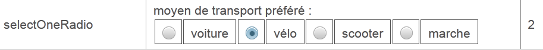 |
5.8. مثال: mv-pf-05: القوائم الديناميكية
هذا المشروع هو نسخة معدلة من مشروع JSF2 [mv-jsf2-04] (انظر القسم 2.6):

لا يقدم هذا المشروع أي علامات PrimeFaces جديدة مقارنة بالمشروع السابق. لذلك، لن نعلق عليه. وهو مدرج في قائمة الأمثلة المتاحة للقارئ على موقع الوثيقة الإلكتروني.
5.9. مثال: mv-pf-06: التنقل – الجلسة – معالجة الاستثناءات
هذا المشروع هو نسخة معدلة من مشروع JSF2 [mv-jsf2-05] (انظر القسم 2.7):
 |
مرة أخرى، لا يقدم هذا المثال أي علامات PrimeFaces جديدة. سنكتفي بالتعليق على جدول الروابط الموضح أعلاه:
<p:panelGrid columns="6">
<p:commandLink value="1" action="form1?faces-redirect=true" ajax="false"/>
<p:commandLink value="2" action="#{form.doAction2}" ajax="false"/>
<p:commandLink value="3" action="form3?faces-redirect=true" ajax="false"/>
<p:commandLink value="4" action="#{form.doAction4}" ajax="false"/>
<p:commandLink value="#{msg['form.pagealeatoireLink']}" action="#{form.doAlea}" ajax="false"/>
<p:commandLink value="#{msg['form.exceptionLink']}" action="#{form.throwException}" ajax="false"/>
</p:panelGrid>
- تحتوي جميع الروابط على السمة ajax=false. وبالتالي، يتم تحميل الصفحة بشكل طبيعي.
- لاحظ السطرين 2 و 4 لمعرفة كيفية إجراء إعادة التوجيه.
5.10. مثال: mv-pf-07: التحقق من صحة بيانات الإدخال وتحويلها
هذا المشروع هو نسخة معدلة من مشروع JSF2 [mv-jsf2-06] (انظر القسم 2.8):
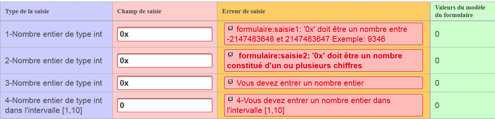
يقدم التطبيق علامتين جديدتين، وهما علامة <p:messages>:
<p:messages globalOnly="true"/>

وعلامة <p:message>:
<p:inputText id="saisie1" value="#{form.saisie1}" styleClass="saisie"/>
<p:message for="saisie1" styleClass="error"/>
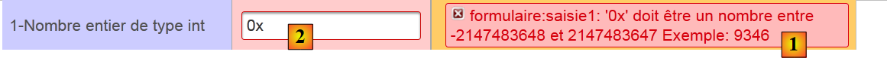 |
بالمقارنة مع علامة <h:message> في JSF، تُدخل علامة <p:message> في PF التغييرات التالية:
- يختلف مظهر رسالة الخطأ [1]،
- يحيط بإطار أحمر بحقل الإدخال غير الصحيح [2].
5.11. مثال: mv-pf-08: الأحداث المتعلقة بتغييرات حالة المكون
هذا المشروع هو نسخة معدلة من مشروع JSF2 [mv-jsf2-07] (انظر القسم 2.9):

قدم مشروع JSF مفهوم المستمعين. تمت معالجة إدارة المستمعين باستخدام PrimeFaces بطريقة مختلفة.
مع JSF:
باستخدام PrimeFaces:
- السطر 2: علامة <h:selectOneMenu> بدون سمة valueChangeListener،
- السطر 4: تضيف العلامة <p:ajax> سلوك AJAX إلى العلامة <h:selectOneMenu> الأم. بشكل افتراضي، تتفاعل مع حدث "تغيير القيمة" لقائمة combo1. عند حدوث هذا الحدث، سيتم إرسال قيم النموذج الذي تنتمي إليه إلى الخادم عبر استدعاء AJAX. وبالتالي يتم تحديث النموذج. نستخدم هذا النموذج الجديد لتحديث القائمة المنسدلة المحددة باسم combo2 (السطر 10). لاحظ، في السطر 4، أن استدعاء AJAX لا ينفذ أي أساليب للنموذج. هذا غير ضروري هنا. نريد ببساطة تحديث النموذج عن طريق إرسال القيم التي تم إدخالها.
5.12. مثال: mv-pf-09: الإدخال المساعد
يتميز هذا المشروع بعلامات إدخال خاصة بـ PrimeFaces تسهل إدخال أنواع معينة من البيانات:
 |
5.12.1. مشروع NetBeans
مشروع NetBeans هو كما يلي:
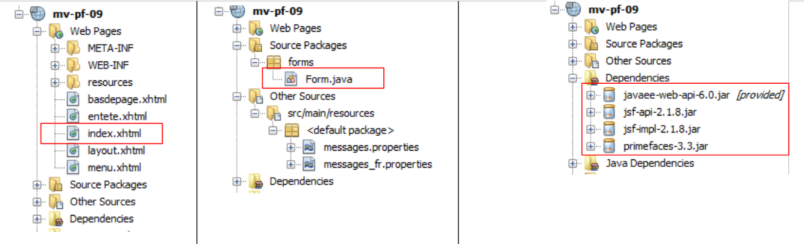 |
تكمن قيمة المشروع في:
- الصفحة الواحدة [index.html] التي يعرضها،
- القالب [Form.java] لتلك الصفحة.
5.12.2. القالب
يحتوي النموذج على أربعة حقول إدخال مرتبطة بالقالب التالي:
package forms;
import java.io.Serializable;
import java.util.ArrayList;
import java.util.Date;
import java.util.List;
import javax.faces.bean.RequestScoped;
import javax.faces.bean.ManagedBean;
@ManagedBean
@SessionScoped
public class Form implements Serializable {
private Date calendrier;
private Integer slider = 100;
private Integer spinner = 1;
private String autocompleteValue;
public Form() {
}
public List<String> autocomplete(String query) {
...
}
// getters and setters
...
}
ترتبط المدخلات الأربعة بالحقول في الأسطر 14–17.
5.12.3. النموذج
النموذج كما يلي:
<?xml version='1.0' encoding='UTF-8' ?>
<html xmlns="http://www.w3.org/1999/xhtml"
xmlns:h="http://java.sun.com/jsf/html"
xmlns:p="http://primefaces.org/ui"
xmlns:f="http://java.sun.com/jsf/core"
xmlns:ui="http://java.sun.com/jsf/facelets">
<ui:composition template="layout.xhtml">
<ui:define name="contenu">
<h2><h:outputText value="#{msg['app.titre']}"/></h2>
<p:growl id="messages" autoUpdate="true"/>
<p:panelGrid columns="3" columnClasses="col1,col2,col3,col4">
<h:outputText value="#{msg['saisie.type']}" styleClass="entete"/>
<h:outputText value="#{msg['saisie.champ']}" styleClass="entete"/>
<h:outputText value="#{msg['bean.valeur']}" styleClass="entete"/>
<!-- calendar -->
...
<!-- slider -->
...
<!-- spinner -->
...
<!-- autocomplete -->
...
</p:panelGrid>
</ui:define>
</ui:composition>
</html>
دعونا نلقي نظرة على حقول الإدخال الأربعة.
5.12.4. التقويم
تسمح لك علامة <p:calendar> باختيار تاريخ من التقويم. تدعم هذه العلامة العديد من السمات.
<h:outputText value="#{msg['calendar.prompt']}"/>
<p:calendar id="calendrier" value="#{form.calendrier}" pattern="dd/MM/yyyy" timeZone="Europe/Paris"/>
<h:outputText id="calendrierValue" value="#{form.calendrier}">
<f:convertDateTime pattern="dd/MM/yyyy" type="date" timeZone="Europe/Paris"/>
</h:outputText>
يحدد السطر 2 أنه يجب عرض التاريخ بتنسيق "dd/mm/yyyy" وأن المنطقة الزمنية هي باريس. عند وضع المؤشر في حقل الإدخال، يتم عرض تقويم:
 |
5.12.5. شريط التمرير
تسمح لك علامة <p:slider> بإدخال عدد صحيح عن طريق سحب شريط التمرير على طول شريط:
رمز العلامة هو كما يلي:
<h:outputText value="#{msg['slider.prompt']}"/>
<h:panelGrid columns="1" style="margin-bottom:10px">
<p:inputText id="slider" value="#{form.slider}" required="true" requiredMessage="#{msg['slider.required']}" validatorMessage="#{msg['slider.invalide']}">
<f:validateLongRange minimum="100" maximum="200"/>
</p:inputText>
<p:slider for="slider" minValue="100" maxValue="200"/>
</h:panelGrid>
<h:outputText id="sliderValue" value="#{form.slider}"/>
- السطر 3: هذه علامة <p:inputText> قياسية تسمح لك بإدخال عدد صحيح. يمكن أيضًا إدخال هذه القيمة باستخدام شريط التمرير،
- السطر 4: ترتبط علامة <p:slider> بعلامة الإدخال <p:inputText> (للسمة). نقوم بتعيين قيمة دنيا وقيمة قصوى لها.
5.12.6. عجلة التحديد
لقد قدمنا هذا المكون بالفعل:
<h:outputText value="#{msg['spinner.prompt']}"/>
<p:spinner id="spinner" min="1" max="12" value="#{form.spinner}" required="true" requiredMessage="#{msg['spinner.required']}" validatorMessage="#{msg['spinner.invalide']}">
<f:validateLongRange minimum="1" maximum="12"/>
</p:spinner>
<h:outputText id="spinnerValue" value="#{form.spinner}"/>
السطر 3: يتيح لك زر التحديد إدخال عدد صحيح يتراوح بين 1 و12. يمكنك إدخال الرقم مباشرةً في حقل الإدخال الخاص بالزر أو استخدام الأسهم لزيادة الرقم المدخل أو تقليله.
5.12.7. الإكمال التلقائي
تتضمن ميزة الإكمال التلقائي كتابة الأحرف القليلة الأولى من النص المدخل. ثم تظهر الاقتراحات في قائمة منسدلة. يمكنك اختيار أحدها. تُستخدم هذه الميزة بدلاً من القوائم المنسدلة عندما تحتوي هذه الأخيرة على محتوى كبير جدًا. لنفترض أنك تريد عرض قائمة منسدلة بالمدن في فرنسا. وهذا يعني عدة آلاف من المدن. إذا سمحت للمستخدم بكتابة الأحرف الثلاثة الأولى من اسم المدينة، يمكنك عندئذٍ عرض قائمة مختصرة بالمدن التي تبدأ بهذه الأحرف.
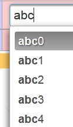 |
فيما يلي كود هذا المكون:
<h:outputText value="#{msg['autocomplete.prompt']}"/>
<p:autoComplete value="#{form.autocompleteValue}" completeMethod="#{form.autocomplete}" required="true" requiredMessage="#{msg['autocomplete.required']}"/>
<h:outputText id="autocompleteValue" value="#{form.autocompleteValue}"/>
<h:panelGroup/>
<h:panelGroup>
<center><p:commandLink value="#{msg['valider']}" update="formulaire:contenu"/></center>
</h:panelGroup>
<h:panelGroup/>
العلامة <p:autoComplete> في السطر 2 هي التي تتيح ميزة الإكمال التلقائي. المعلمة المهمة هنا هي السمة completeMethod، التي تمثل اسم طريقة في النموذج مسؤولة عن إنشاء اقتراحات بناءً على الأحرف التي يكتبها المستخدم. يتم تعريف هذه الطريقة على النحو التالي:
public List<String> autocomplete(String query) {
List<String> results = new ArrayList<String>();
for (int i = 0; i < 10; i++) {
results.add(query + i);
}
return results;
}
- السطر 1: تتلقى الطريقة كمعلمة سلسلة الأحرف التي كتبها المستخدم في حقل الإدخال. وتُرجع قائمة من الاقتراحات،
- الأسطر 4–6: يتم إنشاء قائمة من 10 اقتراحات، باستخدام الأحرف المستلمة كمعلمات وإضافة رقم من 0 إلى 9 إلى كل منها.
5.12.8. علامة <p:growl>
يمكن استخدام العلامة <p:growl> كبديل للعلامة <p:messages>، التي تعرض رسائل أخطاء النماذج.
<p:growl id="messages" autoUpdate="true"/>
في المثال أعلاه، لم يتم استخدام السمة id. تشير السمة autoUpdate=true إلى أنه يجب تحديث قائمة رسائل الخطأ مع كل عملية إرسال (POST) للنموذج.
لنفترض أننا أرسلنا النموذج التالي [1]:
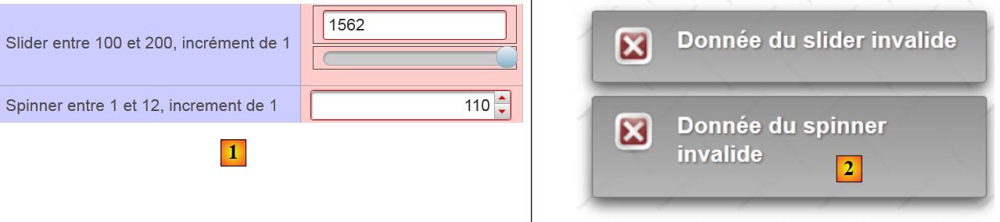 |
- في [2]، تعرض علامة <p:growl> رسائل الخطأ المرتبطة بالبيانات غير الصحيحة.
5.13. مثال: mv-pf-10: dataTable - 1
يقدم هذا المشروع علامة <p:dataTable>، التي تُستخدم لعرض قوائم البيانات

5.13.1. مشروع NetBeans
مشروع NetBeans هو كما يلي:
 |
تكمن جاذبية المشروع في:
- الصفحة الواحدة [index.html] التي يعرضها المشروع،
- القالب [Form.java] لتلك الصفحة، ووحدة [Person].
5.13.2. ملف الرسائل
ملف [messages_fr.properties] هو كما يلي:
app.titre=intro-08
app.titre2=DataTable - 1
submit=Valider
personnes.headers.id=Id
personnes.headers.nom=Nom
personnes.headers.prenom=Pr\u00e9nom
layout.hautdepage=Primefaces en fran\u00e7ais
layout.menu=Menu fran\u00e7ais
layout.basdepage=ISTIA, universit\u00e9 d'Angers
form.langue1=Fran\u00e7ais
form.langue2=Anglais
form.noData=La liste des personnes est vide
form.listePersonnes=Liste de personnes
form.action=Action
5.13.3. النموذج
يمثل bean [Person] شخصًا:
package forms;
import java.io.Serializable;
public class Personne implements Serializable{
// data
private int id;
private String nom;
private String prénom;
// manufacturers
public Personne(){
}
public Personne(int id, String nom, String prénom){
this.id=id;
this.nom=nom;
this.prénom=prénom;
}
// toString
public String toString(){
return String.format("Personne[%d,%s,%s]", id,nom,prénom);
}
// getter and setters
...
}
قالب صفحة [index.xhtml] هو فئة [Form] التالية:
package forms;
import java.io.Serializable;
import java.util.ArrayList;
import java.util.List;
import javax.faces.bean.ManagedBean;
import javax.faces.bean.SessionScoped;
@ManagedBean
@SessionScoped
public class Form implements Serializable{
// model
private List<Personne> personnes;
private int personneId;
// manufacturer
public Form() {
// initialization of the list of persons
personnes = new ArrayList<Personne>();
personnes.add(new Personne(1, "dupont", "jacques"));
personnes.add(new Personne(2, "durand", "élise"));
personnes.add(new Personne(3, "martin", "jacqueline"));
}
public void retirerPersonne() {
...
}
// getters and setters
...
}
- السطور 9-10: الكائن له نطاق جلسة،
- الأسطر 18–24: يقوم المنشئ بإنشاء قائمة من ثلاثة أشخاص، وهي قائمة ستستمر عبر الطلبات،
- السطر 15: معرف الشخص المراد إزالته من القائمة،
- الأسطر 26–28: طريقة الحذف.
5.13.4. النموذج
النموذج كما يلي [index.xhtml]:
<?xml version='1.0' encoding='UTF-8' ?>
<!DOCTYPE html PUBLIC "-//W3C//DTD XHTML 1.0 Transitional//EN" "http://www.w3.org/TR/xhtml1/DTD/xhtml1-transitional.dtd">
<html xmlns="http://www.w3.org/1999/xhtml"
xmlns:h="http://java.sun.com/jsf/html"
xmlns:p="http://primefaces.org/ui"
xmlns:f="http://java.sun.com/jsf/core"
xmlns:ui="http://java.sun.com/jsf/facelets">
<ui:composition template="layout.xhtml">
<ui:define name="contenu">
<h2><h:outputText value="#{msg['app.titre2']}"/></h2>
<p:dataTable value="#{form.personnes}" var="personne" emptyMessage="#{msg['form.noData']}">
<f:facet name="header">
#{msg['form.listePersonnes']}
</f:facet>
<p:column>
<f:facet name="header">
#{msg['personnes.headers.id']}
</f:facet>
#{personne.id}
</p:column>
<p:column>
<f:facet name="header">
#{msg['personnes.headers.nom']}
</f:facet>
#{personne.nom}
</p:column>
<p:column>
<f:facet name="header">
#{msg['personnes.headers.prenom']}
</f:facet>
#{personne.prénom}
</p:column>
<p:column>
<f:facet name="header">
#{msg['form.action']}
</f:facet>
<p:commandLink value="Retirer" action="#{form.retirerPersonne}" update=":formulaire:contenu">
<f:setPropertyActionListener target="#{form.personneId}" value="#{personne.id}"/>
</p:commandLink>
</p:column>
</p:dataTable>
</ui:define>
</ui:composition>
</html>
ينتج عن ذلك العرض التالي (الموضح في المربع أدناه):
 |
- السطر 12: يُنشئ الجدول الموضح في المربع أعلاه. تحدد السمة value المجموعة التي يعرضها الجدول، وهي في هذه الحالة قائمة الأشخاص من النموذج. السمة emptyMessage اختيارية. وهي تحدد الرسالة التي سيتم عرضها عندما تكون القائمة فارغة. بشكل افتراضي، تكون الرسالة هي "لم يتم العثور على سجلات". وهنا، ستكون:
 |
- الأسطر 13–15: إنشاء العنوان [1]،
- الأسطر 16–21: إنشاء عمود [2]،
- الأسطر 22–27: إنشاء عمود [3]،
- الأسطر 28–33: إنشاء العمود [4]،
- الأسطر 34-41: إنشاء العمود [5].
يتيح لك الرابط [إزالة] إزالة شخص من القائمة. في السطر [38]، تقوم طريقة [Form].removePerson بتنفيذ هذه المهمة. وهي تحتاج إلى معرفة معرف الشخص المراد إزالته. ويتم توفير ذلك في السطر 39. في السطر 38، استخدمنا السمة action. وفي حالات أخرى، استخدمنا السمة actionListener. لست متأكدًا من أنني أفهم تمامًا الفرق الوظيفي بين هاتين السمتين. لكن في الممارسة العملية، نلاحظ أن السمات التي تحددها علامات <setPropertyActionListener> يتم تعيينها قبل تنفيذ الطريقة المحددة بواسطة السمة action، في حين أن هذا ليس هو الحال بالنسبة للسمة actionListener. باختصار، بمجرد وجود معلمات لإرسالها إلى الإجراء الذي تم استدعاؤه، يجب عليك استخدام السمة action.
طريقة إزالة شخص ما هي كما يلي:
...
@ManagedBean
@SessionScoped
public class Form implements Serializable{
// model
private List<Personne> personnes;
private int personneId;
public void retirerPersonne() {
// search for the selected person
int i = 0;
for (Personne personne : personnes) {
// current person = selected person?
if (personne.getId() == personneId) {
// delete the current person from the list
personnes.remove(i);
// we're done
break;
} else {
// next person
i++;
}
}
}
...
}
5.14. مثال: mv-pf-11: dataTable - 2
يتميز هذا المشروع بجدول يعرض قائمة بالبيانات حيث يمكن تحديد صف:
 |
يؤدي تحديد صف في الجدول إلى إرسال معلومات حول الصف المحدد إلى النموذج أثناء طلب POST. ونتيجة لذلك، لم تعد هناك حاجة إلى رابط [إزالة] لكل شخص. يكفي وجود رابط واحد للجدول بأكمله.
مشروع NetBeans مطابق للمشروع السابق مع بعض الاختلافات الطفيفة: النموذج ونموذجه. النموذج [index.xhtml] هو كما يلي:
<?xml version='1.0' encoding='UTF-8' ?>
<!DOCTYPE html PUBLIC "-//W3C//DTD XHTML 1.0 Transitional//EN" "http://www.w3.org/TR/xhtml1/DTD/xhtml1-transitional.dtd">
<html xmlns="http://www.w3.org/1999/xhtml"
xmlns:h="http://java.sun.com/jsf/html"
xmlns:p="http://primefaces.org/ui"
xmlns:f="http://java.sun.com/jsf/core"
xmlns:ui="http://java.sun.com/jsf/facelets">
<ui:composition template="layout.xhtml">
<ui:define name="contenu">
<h2><h:outputText value="#{msg['app.titre2']}"/></h2>
<p:dataTable value="#{form.personnes}" var="personne" emptyMessage="#{msg['form.noData']}"
rowKey="#{personne.id}" selection="#{form.personneChoisie}" selectionMode="single">
...
</p:dataTable>
<p:commandLink value="Retirer" action="#{form.retirerPersonne}" update=":formulaire:contenu"/>
</ui:define>
</ui:composition>
</html>
- السطر 13: تسمح لك السمة selectionMode بالاختيار بين أوضاع التحديد الفردي أو المتعدد. هنا، اخترنا تحديد صف واحد فقط،
- السطر 13: تحدد السمة rowkey سمة من سمات العناصر المعروضة تسمح بتحديدها بشكل فريد. هنا، اخترنا معرف الشخص المحدد،
- السطر 13: تحدد السمة selection السمة model التي ستتلقى مرجعًا إلى الشخص المحدد. بفضل سمة rowkey السابقة، يمكن حساب مرجع للشخص المحدد على جانب الخادم. لا تتوفر لدينا تفاصيل الطريقة المستخدمة. يمكننا أن نتصور أن المجموعة يتم استعراضها بالتسلسل بحثًا عن العنصر المطابق لـ rowkey المحدد. وهذا يعني أنه إذا كانت الطريقة التي تربط rowkey بالاختيار أكثر تعقيدًا، فإن هذه الطريقة غير قابلة للاستخدام،
ومع ذلك، تتطور طريقة [Form].removePerson على النحو التالي:
...
@ManagedBean
@SessionScoped
public class Form implements Serializable {
// model
private List<Personne> personnes;
private Personne personneChoisie;
// manufacturer
public Form() {
...
}
public void retirerPersonne() {
// we remove the chosen person
personnes.remove(personneChoisie);
}
// getters and setters
...
}
- السطر 9: عند كل عملية إرسال (POST)، يتم تهيئة المرجع الموجود في السطر 9 بالمرجع الموجود في القائمة من السطر 8 للشخص المحدد،
- في 18: هذا يبسط عملية إزالة الصف. وقد تم إجراء البحث الذي قمنا به في المثال السابق باستخدام علامة <dataTable>.
5.15. مثال: mv-pf-12: dataTable - 3
هذا المشروع مشابه للمشروع السابق. العرض متطابق بشكل ملحوظ:

مشروع NetBeans مطابق للمشروع السابق، مع بعض الاختلافات الطفيفة التي سنستعرضها. يتغير نموذج [index.xhtml] على النحو التالي:
...
<ui:composition template="layout.xhtml">
<ui:define name="contenu">
<h2><h:outputText value="#{msg['app.titre2']}"/></h2>
<p:dataTable value="#{form.personnes}" var="personne" emptyMessage="#{msg['form.noData']}"
selectionMode="single" selection="#{form.personneChoisie}">
...
</p:dataTable>
<p:commandLink value="Retirer" action="#{form.retirerPersonne}" update=":formulaire:contenu"/>
</ui:define>
</ui:composition>
</html>
- السطر 6: تمت إزالة سمة rowkey، لكن سمة selection لا تزال موجودة. يتم الآن إنشاء الارتباط بين سمات rowkey و selection من خلال فئة. تحتوي سمة value في السطر 5 الآن على مثيل لواجهة PrimeFaces SelectableDataModel<T>. تم تحديث طريقة [Form].getPeople الخاصة بالنموذج على النحو التالي:
public DataTableModel getPersonnes() {
return new DataTableModel(personnes);
}
وبذلك تُضاف حبة جديدة إلى المشروع:
 |
هذا البين هو كما يلي:
package forms;
import java.util.List;
import javax.faces.model.ListDataModel;
import org.primefaces.model.SelectableDataModel;
public class DataTableModel extends ListDataModel<Personne> implements SelectableDataModel<Personne> {
// manufacturers
public DataTableModel() {
}
public DataTableModel(List<Personne> personnes) {
super(personnes);
}
@Override
public Object getRowKey(Personne personne) {
return personne.getId();
}
@Override
public Personne getRowData(String rowKey) {
// list of persons
List<Personne> personnes = (List<Personne>) getWrappedData();
// the key is an integer
int key = Integer.parseInt(rowKey);
// search for the selected person
for (Personne personne : personnes) {
if (personne.getId() == key) {
return personne;
}
}
// we found nothing
return null;
}
}
- السطر 7: الفئة هي مثيل لواجهة SelectableDataModel. هناك فئتان على الأقل تنفذان هذه الواجهة: ListDataModel، التي يقبل منشئها قائمة كمعلمة، و ArrayDataModel، التي يقبل منشئها مصفوفة كمعلمة. هنا، يمتد bean الخاص بنا إلى فئة ListDataModel،
- الأسطر 13-15: يأخذ المنشئ قائمة الأشخاص الذين نديرهم كمعلمة. يتم تمرير هذه المعلمة إلى الفئة الأصلية،
- السطر 18: تؤدي طريقة getRowKey دور سمة rowkey التي تمت إزالتها. يجب أن تُرجع الكائن الذي يُعرف الشخص بشكل فريد، وهو في هذه الحالة معرّف الشخص،
- السطر 23: يجب أن تُرجع طريقة getRowData الكائن المحدد بناءً على مفتاح الصف الخاص به. لذا، فهي تُرجع هنا شخصًا بناءً على معرّفه. وسيتم تعيين المرجع الذي تم الحصول عليه بهذه الطريقة إلى الكائن المستهدف لخاصية selection في علامة dataTable، وهي هنا الخاصية selection="#{form.personneChoisie}". معلمة الطريقة هي مفتاح الصف الخاص بالكائن الذي حدده المستخدم، في شكل سلسلة نصية،
- الأسطر 24-35: إرجاع المرجع إلى الشخص الذي تم استلام معرّفه. سيتم تعيين هذا المرجع إلى نموذج [Form].personneChoisie. وبالتالي، تظل طريقة [retirerPersonne] دون تغيير:
public void retirerPersonne() {
// on enlève la personne choisie
personnes.remove(personneChoisie);
}
هذه هي التقنية التي يجب استخدامها عندما لا تكون العلاقة بين سمات **rowkey و**selection علاقة بسيطة بين الخاصية والكائن (**rowkey** إلى **selection**).
5.16. مثال: mv-pf-13: dataTable - 4
هذا المشروع مشابه للمشروع السابق، باستثناء أن طريقة اختيار الشخص المراد إزالته تتغير:

في الأعلى، نرى أن الكائن يتم تحديده عبر قائمة السياق (النقر بزر الماوس الأيمن). ويُطلب تأكيد الحذف:
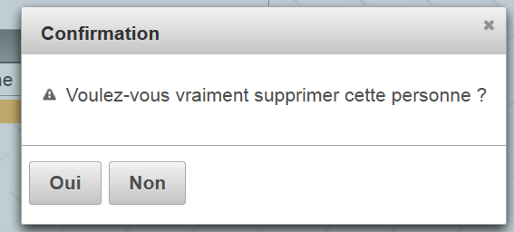 |
يتغير نموذج [index.xhtml] على النحو التالي:
...
<ui:composition template="layout.xhtml">
<ui:define name="contenu">
<!-- title -->
<h2><h:outputText value="#{msg['app.titre2']}"/></h2>
<!-- contextual menu -->
<p:contextMenu for="personnes">
<p:menuitem value="#{msg['form.supprimer']}" onclick="confirmation.show()"/>
</p:contextMenu>
<!-- dialog box -->
<p:confirmDialog widgetVar="confirmation" message="#{msg['form.suppression.confirmation']}"
header="#{msg['form.suppression.message']}" severity="alert" >
<p:commandButton value="#{msg['form.supprimer.oui']}" update=":formulaire:contenu" action="#{form.retirerPersonne}" oncomplete="confirmation.hide()"/>
<p:commandButton value="#{msg['form.supprimer.non']}" onclick="confirmation.hide()" type="button" />
</p:confirmDialog>
<!-- dataTable-->
<p:dataTable id="personnes" value="#{form.personnes}" var="personne" emptyMessage="#{msg['form.noData']}"
selection="#{form.personneChoisie}" selectionMode="single">
...
</p:dataTable>
</ui:define>
</ui:composition>
</html>
- الأسطر 9–11: تعريف قائمة سياق لـ (للسمة) dataTable في السطر 21 (السمة id). تظهر قائمة السياق هذه عند النقر بزر الماوس الأيمن على جدول الأشخاص،
- السطر 10: تحتوي قائمتنا على خيار واحد فقط (علامة menuItem). عند النقر فوق هذا الخيار، يتم تنفيذ كود JavaScript الموجود في السمة onclick. يعرض كود JavaScript [confirmation.show()] مربع الحوار من السطر 14 (السمة widgetVar). وهو كما يلي:
 |
- السطر 14: تُظهر السمة message الرقم [3]، وتُظهر السمة header الرقم [1]، وتُظهر السمة severity الرمز [2]،
- السطر 16: يعرض [4]. عند النقر، يتم حذف الشخص (سمة الإجراء)، ثم يتم إغلاق مربع الحوار (سمة oncomplete). سمة oncomplete هي كود JavaScript يتم تنفيذه بمجرد تنفيذ الإجراء من جانب الخادم،
- السطر 17: يعرض [5]. عند النقر، يُغلق مربع الحوار ولا يتم حذف الشخص.
5.17. مثال: mv-pf-14: dataTable - 5
يوضح هذا المشروع أنه من الممكن تلقي استجابة من الخادم بعد تنفيذ استدعاء AJAX. للقيام بذلك، نستخدم سمة oncomplete لاستدعاء AJAX:
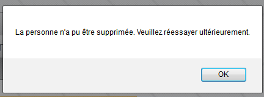 |
يتغير نموذج [index.xhtml] على النحو التالي:
...
<ui:composition template="layout.xhtml">
<ui:define name="contenu">
...
<!-- dialog box 1 -->
<p:confirmDialog widgetVar="confirmation" ... >
<p:commandButton value="#{msg['form.supprimer.oui']}" update=":formulaire:contenu" action="#{form.retirerPersonne}" oncomplete="handleRequest(xhr, status, args);confirmation.hide()"/>
<p:commandButton ... />
</p:confirmDialog>
<!-- Javascript -->
<script type="text/javascript">
function handleRequest(xhr, status, args) {
// erreur ?
if(args.msgErreur) {
alert(args.msgErreur);
}
}
</script>
...
</p:dataTable>
</ui:define>
</ui:composition>
</html>
- السطر 7: تستدعي السمة oncomplete دالة JavaScript في الأسطر 13–18،
- السطر 13: يجب أن تكون توقيع الدالة هو هذا. args هو قاموس يمكن للنموذج من جانب الخادم ملؤه،
- السطر 15: نتحقق مما إذا كان قاموس args يحتوي على سمة باسم 'msgError'. إذا كان الأمر كذلك، يتم عرضها (السطر 16).
في النموذج، تتطور طريقة [removePerson] على النحو التالي:
public void retirerPersonne() {
// suppression aléatoire
int i = (int) (Math.random() * 2);
if (i == 0) {
// on enlève la personne choisie
personnes.remove(personneChoisie);
} else {
// on renvoie une erreur
String msgErreur = Messages.getMessage(null, "form.msgErreur", null).getSummary();
RequestContext.getCurrentInstance().addCallbackParam("msgErreur", msgErreur);
}
}
- السطر 3: إنشاء رقم عشوائي 0 أو 1،
- الأسطر 4–6: إذا كان الرقم 0، يتم حذف الشخص الذي اختاره المستخدم من قائمة الأشخاص،
- السطر 9: خلاف ذلك، يتم إنشاء رسالة خطأ متعددة اللغات:
form.msgErreur=La personne n'a pu \u00eatre supprim\u00e9e. Veuillez r\u00e9essayer ult\u00e9rieurement.
form.msgErreur_detail=La personne n'a pu \u00eatre supprim\u00e9e. Veuillez r\u00e9essayer ult\u00e9rieurement.
- السطر 10: عبارة معقدة تضيف السمة المسماة 'msgError' إلى قاموس args الذي ذكرناه سابقًا، مع قيمة msgError التي تم إنشاؤها في السطر 9. ثم يتم استرداد هذه السمة بواسطة طريقة JavaScript في [index.xhtml]:
<!-- Javascript -->
<script type="text/javascript">
function handleRequest(xhr, status, args) {
// erreur ?
if(args.msgErreur) {
alert(args.msgErreur);
}
}
</script>
5.18. مثال: mv-pf-15: شريط الأدوات
في هذا المشروع، نقوم بإنشاء شريط أدوات:
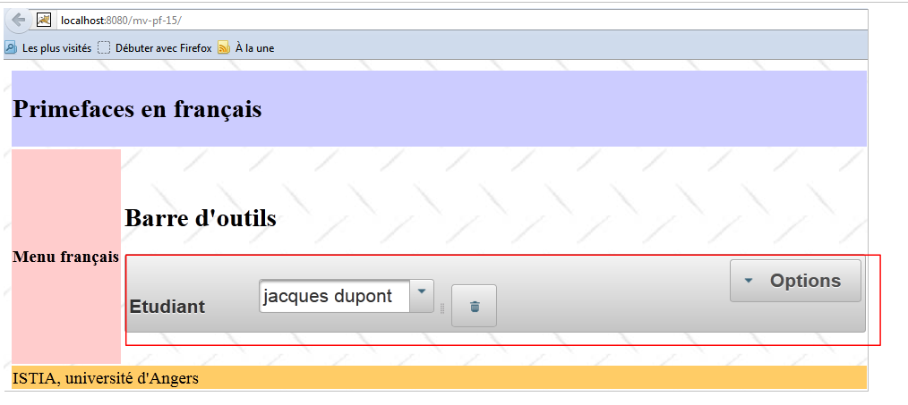 |
شريط الأدوات هو المكون الموضح في المربع أعلاه. يتم إنشاؤه باستخدام كود XHTML التالي [index.xhtml]:
<?xml version='1.0' encoding='UTF-8' ?>
<!DOCTYPE html PUBLIC "-//W3C//DTD XHTML 1.0 Transitional//EN" "http://www.w3.org/TR/xhtml1/DTD/xhtml1-transitional.dtd">
<html xmlns="http://www.w3.org/1999/xhtml"
xmlns:h="http://java.sun.com/jsf/html"
xmlns:p="http://primefaces.org/ui"
xmlns:f="http://java.sun.com/jsf/core"
xmlns:ui="http://java.sun.com/jsf/facelets">
<ui:composition template="layout.xhtml">
<ui:define name="contenu">
<!-- title -->
<h2><h:outputText value="#{msg['app.titre2']}"/></h2>
<!-- toolbar-->
<p:toolbar>
<p:toolbarGroup align="left">
...
</p:toolbarGroup>
<p:toolbarGroup align="right">
...
</p:toolbarGroup>
</p:toolbar>
</ui:define>
</ui:composition>
</html>
- الأسطر 15–22: شريط الأدوات،
- الأسطر 16–18: تحديد مجموعة المكونات الموجودة على يسار شريط الأدوات،
- الأسطر 19-21: نفس الشيء بالنسبة للمكونات الموجودة على اليمين.
المكونات الموجودة على يسار شريط الأدوات هي كما يلي:
<p:toolbarGroup align="left">
<h:outputText value="#{msg['form.etudiant']}"/>
<p:spacer width="50px"/>
<p:selectOneMenu value="#{form.personneId}" effect="fade">
<f:selectItems value="#{form.personnes}" var="personne" itemLabel="#{personne.prénom} #{personne.nom}" itemValue="#{personne.id}"/>
</p:selectOneMenu>
<p:separator/>
<p:commandButton id="delete-personne" icon="ui-icon-trash" action="#{form.supprimerPersonne}" update=":formulaire:contenu"/>
<p:tooltip for="delete-personne" value="#{msg['form.delete.personne']}"/>
</p:toolbarGroup>
وهي تعرض العرض التالي:
 |
- السطر 2: يعرض [1]،
- السطر 3: يعرض مسافة 30 بكسل [2]،
- الأسطر 4-6: تعرض قائمة منسدلة تحتوي على قائمة بالأشخاص [3]،
- السطر 7: يعرض فاصلًا [4]،
- السطر 8: يعرض زرًا [5] يُستخدم لحذف الشخص المحدد من القائمة المنسدلة. يحتوي الزر على أيقونة. هذه الأيقونات مأخوذة من jQuery UI. يمكنك العثور على قائمة بها على الرابط [http://jqueryui.com/themeroller/] [6]:
 |
- للعثور على اسم أيقونة، ما عليك سوى تمرير الماوس فوقها. ثم يُستخدم هذا الاسم في سمة icon لمكون <commandButton>، على سبيل المثال icon="ui-icon-trash". لاحظ أن الاسم المحدد أعلاه هو .ui-icon-trash وأن النقطة الأولى تُحذف من هذا الاسم في سمة icon،
- السطر 9: ينشئ تلميحًا للزر (لسمة). عند تمرير الماوس فوق الزر، تظهر رسالة التلميح [7].
القالب المرتبط بهذه المكونات هو كما يلي:
package forms;
import java.io.Serializable;
import java.util.ArrayList;
import java.util.List;
import javax.faces.bean.ManagedBean;
import javax.faces.bean.SessionScoped;
@ManagedBean
@SessionScoped
public class Form implements Serializable {
// model
private List<Personne> personnes;
private int personneId;
// manufacturer
public Form() {
// initialization of the list of persons
personnes = new ArrayList<Personne>();
personnes.add(new Personne(1, "dupont", "jacques"));
personnes.add(new Personne(2, "durand", "élise"));
personnes.add(new Personne(3, "martin", "jacqueline"));
}
public void supprimerPersonne() {
// search for the selected person
int i = 0;
for (Personne personne : personnes) {
// current person = selected person?
if (personne.getId() == personneId) {
// delete the current person from the list
personnes.remove(i);
// we're done
break;
} else {
// next person
i++;
}
}
}
// getters and setters
...
}
المكونات الموجودة على الجانب الأيمن من شريط الأدوات هي كما يلي:
<p:toolbar>
<p:toolbarGroup align="left">
...
</p:toolbarGroup>
<p:toolbarGroup align="right">
<p:menuButton value="#{msg['form.options']}">
<p:menuitem id="menuitem-francais" value="#{msg['form.francais']}" actionListener="#{changeLocale.setFrenchLocale}" update=":formulaire"/>
<p:menuitem id="menuitem-anglais" value="#{msg['form.anglais']}" actionListener="#{changeLocale.setEnglishLocale}" update=":formulaire"/>
</p:menuButton>
</p:toolbarGroup>
</p:toolbar>
وهي تعرض العرض التالي:
 |
- الأسطر 6–9: زر قائمة. يحتوي على خيارات القائمة،
- السطر 7: خيار تحويل النموذج إلى اللغة الفرنسية،
- السطر 8: خيار التبديل إلى اللغة الإنجليزية.
5.19. الخلاصة
لدينا الآن ما يكفي من المعرفة لنقل تطبيقنا النموذجي إلى PrimeFaces. لم نغطي سوى حوالي خمسة عشر مكونًا، في حين أن المكتبة تحتوي على أكثر من 100 مكون. ننصح القراء بالبحث عن أي مكونات مفقودة مباشرةً على موقع PrimeFaces الإلكتروني.
5.20. الاختبار باستخدام Eclipse
تتوفر مشاريع Maven على موقع الأمثلة [1]:
 |
بمجرد استيرادها إلى Eclipse، يمكن تشغيلها [2]. حدد Tomcat في [3]. ستظهر بعد ذلك في متصفح Eclipse الداخلي [3].
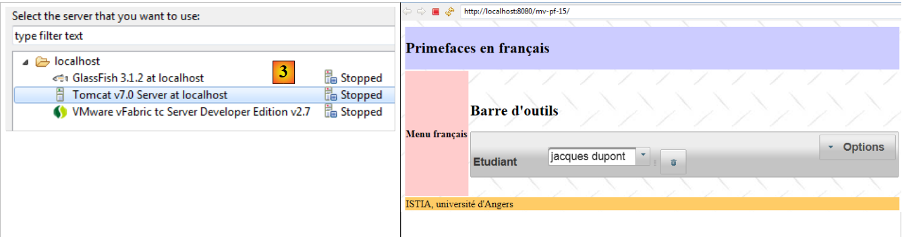 |